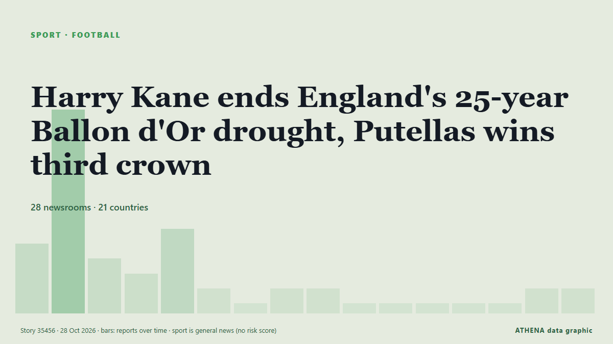

Harry Kane ends England's 25-year Ballon d'Or drought, Putellas wins third crown

Harry Kane became the first Englishman in 25 years to win the Ballon d’Or on Monday after scoring 73 goals for club and country last season. από France 24 English
Αναφέρθηκε ανεξάρτητα από 28 μέσα σε 21 χώρες από τις 26 Οκτ, πρώτο το Nile Post· η κάλυψη έχει ηρεμήσει. Τα αθλητικά και τα πολιτιστικά καταχωρούνται χωρίς εκτίμηση κινδύνου. Βεβαιότητα 92% (υψηλή): το επιβεβαιώνουν 28 ανεξάρτητα μέσα, μέση αξιοπιστία 74%. Μέσα ανά χώρα: Νιγηρία (4), Γαλλία (3), Σιγκαπούρη (2). Κάλυψη: 26 Οκτ έως 28 Οκτ, 32 ώρες.
Τι άλλαξε: 10 νέες αναφορές από 9 μέσα στο 24ωρο έως 28 Οκτ.
Πρώτη διατύπωση: Ballon d'Or: Kane and Putellas take top awards
Οι τίτλοι των ειδήσεων παρουσιάζονται στα αγγλικά, όπως δημοσιεύτηκαν.
Με μια ματιά
Επιλέγεται, βαθμολογείται και γράφεται από τη δημοσιευμένη μεθοδολογία του ATHENA. Κανένας συντάκτης δεν παρεμβαίνει σε μεμονωμένα γεγονότα. Πώς παράγεται ›
| 26 Oct 20:50 UTC | 4 |
|---|---|
| 26 Oct 22:50 UTC | 13 |
| 27 Oct 00:50 UTC | 3 |
| 27 Oct 02:50 UTC | 2 |
| 27 Oct 04:50 UTC | 5 |
| 27 Oct 06:50 UTC | 1 |
| 27 Oct 08:50 UTC | 0 |
| 27 Oct 10:50 UTC | 1 |
| 27 Oct 12:50 UTC | 1 |
| 27 Oct 14:50 UTC | 0 |
| 27 Oct 16:50 UTC | 0 |
| 27 Oct 18:50 UTC | 0 |
| 27 Oct 20:50 UTC | 0 |
| 27 Oct 22:50 UTC | 0 |
| 28 Oct 00:50 UTC | 1 |
| 28 Oct 02:50 UTC | 1 |
Γιατί αυτοί οι αριθμοί
Σημασία
Κίνδυνος
Βεβαιότητα
Η κάλυψη — ποιος το ανέφερε και πότε
ο τίτλος όπως δημοσιεύτηκε · ανοίγει το πρωτότυπο- Nile Post · ΟυγκάνταPutellas wins record-equalling third Ballon d'Or
- Vanguard · ΝιγηρίαBallon d’Or 2026: Alexia Putellas wins Best Women’s Player award for third time
- Channels TV · Νιγηρία[UPDATED] Alexia Putellas Wins 2026 Women’s Ballon d’Or
- CNA (Channel NewsAsia) · ΣιγκαπούρηPutellas wins 2026 Ballon d'Or Feminin award
- RTÉ News · ΙρλανδίαBallon d'Or: Kane and Putellas take top awards
- Hespress English · ΜαρόκοHarry Kane wins 2026 Ballon d’Or, Alexia Putellas claims third women's title
- Evening Standard (London) · Ηνωμένο ΒασίλειοBallon d'Or 2026: Harry Kane and Alexia Putellas win big, Arsenal star receives trophy as Spain stars dominate
- Dawn · ΠακιστάνEngland forward Kane crowned Ballon d'Or winner, Putellas wins women's award
- Arab News · Σαουδική ΑραβίαKane becomes first Englishman in 25 years to win Ballon d’Or and Putellas wins her third
- TheJournal.ie · ΙρλανδίαHarry Kane and Alexia Putellas win Ballon d'Or awards
- Al Jazeera English · ΚατάρEngland’s Harry Kane wins Ballon d’Or, Alexia Putellas takes women’s award
- Jamaica Observer · Τζαμάικα‘Bunny’ Shaw finishes historic third in Ballon d’Or race
- Anadolu Agency (English) · ΤουρκίαHarry Kane, Alexia Putellas win 2026 Ballon d'Or awards in London
- France 24 English · ΓαλλίαHarry Kane ends England's 25-year Ballon d'Or drought, Putellas wins third crown
- Punch · ΝιγηρίαPutellas wins third Women’s Ballon d’Or
- RFI English · ΓαλλίαPutellas and Kane win 2026 Ballon d'Or as PSG retain men's team of year prize
- Korea Herald · Νότια ΚορέαKane becomes first Englishman in 25 years to win Ballon d'Or, Putellas wins third
- CBC News (alternative feed) · ΚαναδάςHarry Kane, Alexia Putellas capture Ballon d'Or wins
- Club of Mozambique · ΜοζαμβίκηEngland’s Harry Kane wins Ballon d’Or, Alexia Putellas takes women’s award
- SBS News · ΑυστραλίαHarry Kane, Alexia Putellas win Ballon d'Or as England ends 25-year wait
- The Kathmandu Post · ΝεπάλEngland forward Kane crowned Ballon d’Or winner, Putellas wins women’s award
- Business Recorder · ΠακιστάνEngland forward Kane crowned Ballon d'Or winner, Putellas wins women's award
- Premium Times · ΝιγηρίαBallon d’Or: Kane, Putellas crowned world’s best footballers in London
- Jamaica Observer · ΤζαμάικαKane, Putellas taste Ballon d’Or glory
- Amu TV · ΑφγανιστάνHarry Kane wins first Ballon d’Or, Putellas takes women’s award for third time
- News of Bahrain · ΜπαχρέινThree Times a Queen: Putellas Wins Again
- NPR · Ηνωμένες ΠολιτείεςHarry Kane becomes first Englishman in 25 years to win Ballon d'Or
- to vima · ΕλλάδαHarry Kane Wins First Ballon d’Or, Ending England’s 25-Year Wait
- France 24 English · ΓαλλίαEngland's Kane wins Ballon d'Or, Putellas claims women's award
- CNA (Channel NewsAsia) · ΣιγκαπούρηPutellas completes remarkable comeback with record-equalling third Ballon d'Or
- AllAfrica · AFRAfrica: Kane, Putellas Are 2026 Ballon d'Or Winners
- AllAfrica · AFRAfrica: Kane Ends England's 25-Year Wait, Wins Ballon d'Or